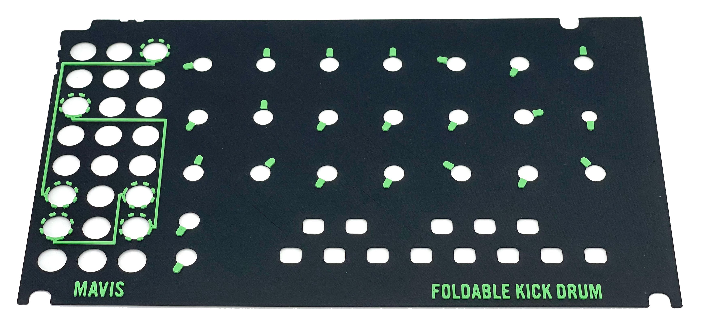
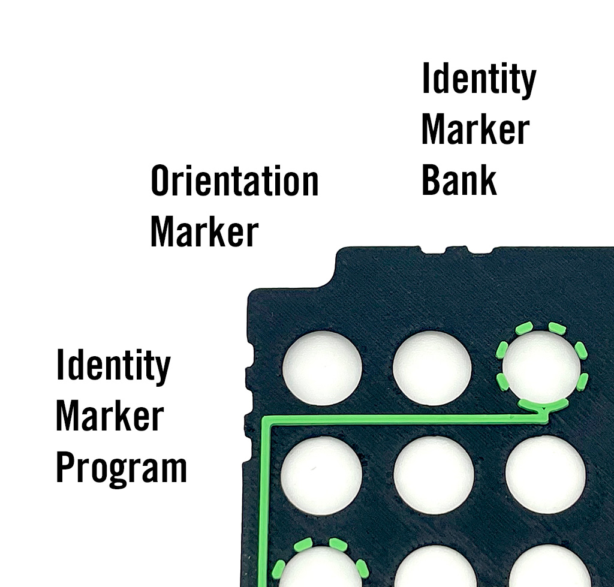
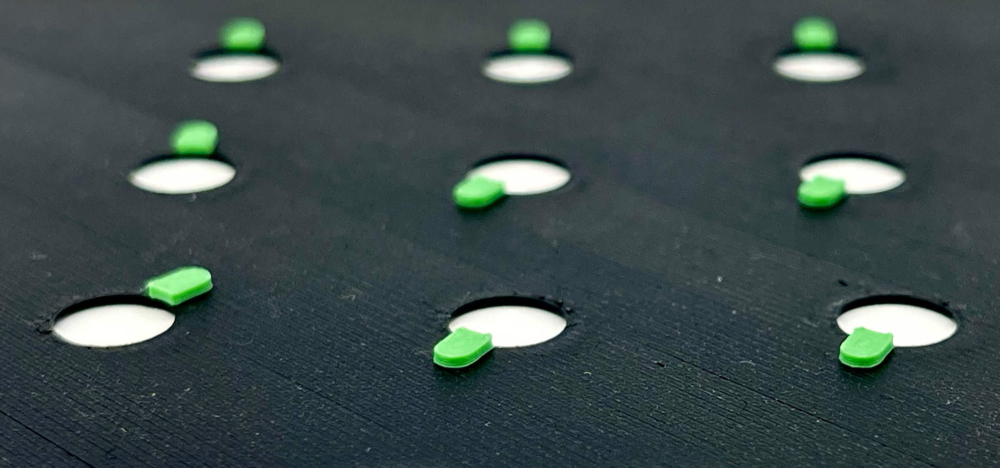
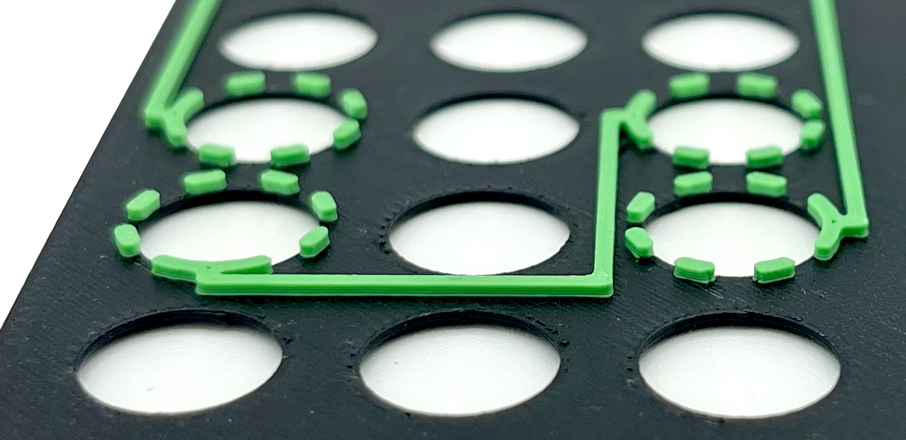
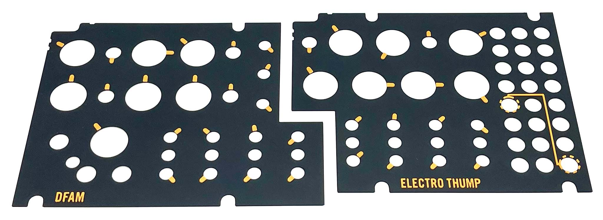

Tactile Patch Sheets
Introduction
A while ago I had the privilege of collaborating with Tim Burgess from Raised Bar. He was working on transcribing patch sheets of the DFAM synthesizer into screen-readable web pages. This makes it possible for vision impaired people to dial in the synthesizer parameters. Having trouble with sight himself, Tim was struggling to get clear instructions from people without a synthesizer background.
I remembered Tim from accessibility work he had done for LinnStrument and volunteered to methodically describe the DFAM patch sheets to him over the phone. Over the course of a few days we got the patch sheet collection transcribed and tested.

Tactile Approach
While going through the patch sheet transcription, I kept thinking that there had to be better ways to convey patch information without relying solely on vision. Being an avid 3D printer enthusiast, I asked Tim if I could create a series of tactile 3D printed prototypes and mail them to him for testing and feedback.
The tactile vocabulary explained here, was the result of this initiative. Hopefully this is an inspiring starting point for other people and can spark further research and innovation in this domain. Everything in this work is open-sourced under the New BSD license.
Ready To Print
Alongside with the vocabulary, there's also a complete collection of factory DFAM and Mavis patch sheets, ready to 3D print. If you know sightless people that could benefit from these, and own a 3D printer, consider printing these patch sheets for them.
They're easy and quick to print, with negligible material cost.
Find the details at the bottom of this page.
Vocabulary
Base Sheet
The base sheet is placed over the front panel of the instrument with cutouts for knobs, buttons, switches, ports, and other front panel elements. The shape of the base sheet is designed to fit snugly around the front panel screws and edges, keeping the base sheet in place. The base sheet is 0.65mm thick and provides the foundation for the other elements of the tactile patch sheet.
Orientation Marker
The top-left corner of the base sheet has a rounded rectangular cutout, big enough for a finger tip to rest in. The exact dimensions depend on what fits best with the shape and layout of the front panel, on the Mavis sheets these dimensions are roughly 10.9mm by 5.6mm with 2.5mm rounded corners, on the DFAM sheets these are roughly 16mm x 7mm with 3.1mm rounded corners. The rest of the patch sheet corners are straight 90 degree angles. This makes it easy to identify the intended orientation of the patch sheet by sliding a finger along the edges of the sheet until that unique cutout is felt.
Identity Markers
To the bottom and right sides of the orientation marker are identity markers, allowing identification of the patch sheet purely by touch. Identity markers are small 3mm wide and 1mm deep rectangular notches along the edges of the base sheet that are grouped 3mm apart.
By sliding a finger upwards from the orientation marker and then to the right, the first group of identity markers can be found, conveying the bank of the patch sheet. A bank contains a collection of patch sheets, for instance for a particular instrument.
By sliding a finger leftwards from the orientation marker and then down, the second group of identity markers can be found, conveying the program of the patch sheet. The program is a unique ordinal for a patch within a given bank.
Knob Pointer
Knob pointers convey the position of a particular knob. A knob pointer is 0.75mm thick, 2.5mm wide and 4mm long and is placed adjacent to the circular cutout for the related knob, pointing outwards.
The extruded sides of the knob pointer are straight and have clean 90 degree edges, making it easy for fingers to find while sliding over the base sheet.
The knob pointer connects on one end to the knob cutout in the base sheet, getting as close to the knob itself as possible. The opposite outer end of the knob pointer in fully rounded.
By getting one edge as close to the knob as possible, there can be no tactile confusion about which knob the pointer belongs to.
Port Marker
Port markers identify ports between which cables need to be connected. Semi-modular synthesizers like DFAM and Mavis have patch bays for cables. The ports of these patch bays are accessible through cutouts in the base sheet. There can be a lot of tactile activity in the patch bay area, making it important for the port markers to be very recognizable.
Port markers are 0.75 thick, 1mm wide circles that get as close to the port cutout as possible. The circles are cut into 16 equally spaced segments, leaving every other segment blank, effectively created a dashed circle line. The extruded sides of the port marker are straight and have clean 90 degree edges, making it easy for fingers to find while sliding over the base sheet. The clean cut corners of the eight circular line dashes, set the port markers unmistakably apart from other tactile activity.
One of the eight segments previously mentioned as being blank, is actually filled in to indicate the starting direction of the cable tracer.
Cable Tracer
Cable tracers draw a path between two port markers to convey where a cable needs to be connected. A cable tracer is 0.75mm thick and 1mm wide and connected to port markers on either end. Cable tracers can only have straight lines and straight corners.
Cable tracers only change direction when there can be no confusion which direction needs to the followed, meaning that when two tracers cross, the path to follow is always straight. The extruded sides of the cable tracer are straight and have clean 90 degree edges, making it easy for fingers to find while sliding over the base sheet.
Cable tracers should always at least be 1mm apart to allow differentiation of parallel paths.

Split Sheets
Since the tactile patch sheets are designed for 3D printing, there's a size limit for them to fit onto 3D printer beds. If a tactile patch sheet needs to be split in multiple pieces, this can be done provided that the same orientation marker and identity markers are present on each top-left corner of the pieces.
The split sheets need to have uniquely identifiable shapes on the inside edges where they would join with the other pieces, effectively creating a simple puzzle that can be identified by touch and only assembled in one way. The nature of those inside shapes is dependent on the layout of the front panel. None of the tactile vocabulary on the base sheet can be interrupted or split across multiple pieces.
3D Printed Models
All the factory DFAM and Mavis patch overlays have been converted to Tactile Patch Sheet 3D models.
The STL models are ready to print and can either be printed in a single color, or in two colors to better differentiate the pointers and markers for sighted people.
The printing instructions are simple:
- First layer: 0.2mm
- Other layers: 0.15mm
- Optional color change at: 0.8mm (layer 5)
All the models can be downloaded from Printables.
Source Files
All source design files, design components, and models can be found on GitHub.
FAQ
What about Braille?
It turns out that many sightless people don't have the capacity to feel the fine details that Braille requires. One prevalent reason is that a common cause of vision loss is type 2 diabetes, and that often also reduces the sensitivity of the finger tips.
I still experimented with 3D printing Braille, and the only way to get the dots to have the right detail and feel, is to print them vertically. These sheets need to be printed horizontally, which makes this contradictory.
How can people know what the knobs are set at?
Many knobs, like those on the DFAM and Mavis, don't have a tactile marker. This does make it challenging for vision impaired people to instantly identify what their position is. A common technique to completely turn a knob to one of its extremes at the top or bottom, which then gives a reference for the knob position marker.
I tried to design a solution for this, which resulted into my Knobotron tactile knob rings, the problem there is that I couldn't find a way to allow the Tactile Patch Sheets from still being able to be removed and switched out when those knob rings are on.
What makes you qualified to do this?
Nothing, I am not qualified. I wanted to try to help with the skills I have and at least for the sightless people that tested this overlay, it was a helpful tool. They're really cheap and fast to make if you already have a 3D printer and filament. If you're unsure about their applicability, trying one out is the easiest way to tell. This could be a nice gift you make for a friend or community member that is vision impaired, if it helps them, everyone wins!
This effort is also completely open-source, using one of the most permissive licenses available, feel free to modify, contribute, adapt, extend or ignore. It's all good!
Contact
You can find me on my Discord server.
My website is https://uwyn.com
I'm also available on most social media: Mastodon, Bluesky, GitHub, LinkedIn, X/Twitter, Threads